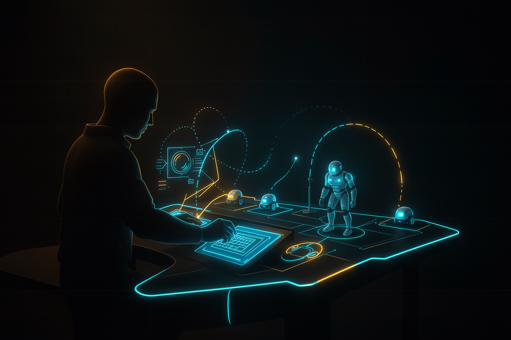

🔄 El giro
Peter Steinberger resume el cambio de nivel avanzado en una frase: "ya no deberías estar escribiendo prompts para tus agentes de código; deberías estar diseñando loops que les den prompts a tus agentes." La persona que escribía cada instrucción sale de escena; entra un sistema que escribe las instrucciones en su lugar.

Qué ver: la persona ya no tiene la mano en el prompt: la tiene en el plano. Diseña la máquina que escribe los prompts; la máquina es la que conversa con el agente, vuelta tras vuelta.
Lee el diagrama: antes, tu atención intervenía en cada vuelta. Después, tu atención interviene una vez —al diseñar el loop— y el loop lleva la conversación con el agente.
🗣️ La misma idea, en boca de otra persona
Boris Cherny aparece citado diciendo algo parecido: "ya no le doy prompts a Claude: tengo loops en ejecución, y son ellos los que le dan prompts a Claude." El ingeniero deja de ser el operador y se convierte en el diseñador.
Honestidad: esa frase de Cherny circula citada por terceros, no como una frase verificada en la fuente primaria. Tómala como una ilustración del espíritu del cambio, no como una cita literal confirmada.
🏛️ El humano como arquitecto
El cambio tiene un nombre: loop engineering. La decisión es deliberada: tú se sustituye como la persona que le da prompts al agente. En vez de escribir la siguiente instrucción, diseñas el SISTEMA que decide y escribe esa instrucción por ti.
✗ Operador (tú dentro del ciclo)
Lees el resultado, piensas en el siguiente paso, escribes el prompt, esperas y repites. Tu tiempo crece de forma lineal con el número de vueltas: tú eres el cuello de botella.
✓ Arquitecto (tú fuera del ciclo)
Defines el objetivo, la verificación y los límites una sola vez. El loop completa las vueltas por su cuenta. Tu tiempo se invierte en el diseño, no en cada iteración.
💡 Por qué esto cambia la escala
Como operador, atiendes una conversación a la vez. Como arquitecto, puedes tener varios loops en ejecución, porque tu trabajo se convirtió en el diseño, no la escritura. Es el prerrequisito mental para todo lo que viene en esta ruta: flotas, bucles programados, verificadores adversariales.
🤖 El metaagente
Si estás diseñando loops, surge una idea provocadora: ¿y si un agente diseñara los loops por ti? Ese es el meta-agente — un agente que INFIERE, según tu forma de trabajar (tu «vibe»), qué loops querrías y los escribe.
La escalera de abstracción: cada escalón te aleja un paso de escribir instrucciones. El metaagente es el escalón más alto y especulativo, y exige guardrails aún más estrictos (verás por qué en la 4.3).
🧠 Por qué esto es una provocación, no una receta
Cuanto más arriba en la escalera, menos ves lo que está pasando y más se propaga un error sin revisión. El metaagente es una dirección tentadora para quien ya domina los peldaños inferiores; es una trampa para quien se salta etapas. Ten presente la tensión: la abstracción gana escala y pierde visibilidad.
♻️ Loop = objetivo recursivo
Addy Osmani da la definición que organiza toda la ruta: un ciclo es un objetivo recursivo — defines un propósito y la IA itera hasta completarlo. Todo loop sólido se apoya en dos pilares.
Los dos pilares: o OBJETIVO (lo que quieres) y el VERIFICACIÓN (cómo sabe la IA que terminó). Sin el objetivo, no tiene una meta; sin la verificación, no sabe cuándo detenerse, y la recursión nunca termina (o termina demasiado pronto).
🧩 Dónde se conecta esto con la Trilha 1
Es el mismo esqueleto reason→act→observe que viste al principio, solo que expresado desde el punto de vista de quien DISEÑA. "Objetivo + verificación" es el núcleo invariable; loop engineering es simplemente lo que haces con él cuando dejas de operar y empiezas a diseñar.
💾 Estado externalizado
Un loop de verdad funciona más allá de una sola conversación. Para sobrevivir a varias ventanas de contexto, necesitas sacar el estado de la cabeza del agente y ponerlo en el mundo: git + archivos de progreso. Es la receta del harness de Anthropic.
El loop de cada sesión: lee el estado → avanza de forma incremental en UNA feature → se verifica → hace commit → deja el repositorio limpio. La siguiente sesión retoma desde donde terminó la anterior, aunque la ventana de contexto se haya reiniciado.
🧠 La regla de oro
Una funcionalidad por sesión, siempre con commit y dejando todo limpio. Esto transforma un problema enorme (que no cabe en una ventana) en una fila de problemas pequeños (cada uno sí cabe). El disco se convierte en la memoria a largo plazo que el modelo no tiene.
Objetivo del prompt de abajo
Darle al agente el protocolo de estado externalizado: leer el disco, avanzar UNA feature, autoverificar, hacer commit y dejar todo limpio, para que la siguiente sesión pueda empezar por sí sola incluso después de que se agote la ventana de contexto.
# Cole no Claude Code, na raiz do projeto (mantenha um PROGRESS.md no repo)
A cada sessão, siga ESTE protocolo, nesta ordem:
1. Leia PROGRESS.md e o git log para entender o que já foi feito.
2. Escolha UMA única feature pendente — a próxima da lista.
3. Implemente só essa feature. Não comece outra.
4. Autoverifique: rode os testes e confirme que passam.
5. Commite com uma mensagem clara e atualize PROGRESS.md (marque feita).
6. Deixe o repositório limpo (git status sem pendências) e pare.
Objetivo final: . Cómo verificar: ejecuta el prompt, cierra la sesión y abre una NUEVA desde cero con el mismo prompt. Si la segunda sesión sabe exactamente dónde se detuvo la primera (leyendo PROGRESS.md + git log) y seguir con la siguiente función, el estado está realmente externalizado. Si vuelve a empezar de cero o repite el trabajo, no se está siguiendo el protocolo.
🧭 No es para todo el mundo
Hora de una dosis de realidad. Nate Herk hace la salvedad más útil del recorrido: que Steinberger — un coder hardcore que trabaja todo el día con agentes: haz ingeniería de loops no significa que esto se aplique a ti. La herramienta adecuada depende de tu caso.
| Tipo de bucle | Qué lo activa | Para quién |
|---|---|---|
| Por cadencia | un reloj: se ejecuta cada X (hora, día) | tareas recurrentes predecibles |
| Por evento | ocurre algo: un PR, un ticket, un webhook | responder al flujo de trabajo |
| 24/7 (siempre activo) | nunca se detiene: una flota funcionando todo el tiempo | pocos casos de alto volumen |
🚨 El error de estado
No todos necesitan 24/7. Mantener una flota funcionando todo el tiempo «porque es lo que hacen los hardcore» es un error de estatus, no de ingeniería. La mayoría de los casos se resuelve con un loop por cadencia o por evento, y la 4.3 mostrará el costo de elegir mal.
📒 Glosario de esta sección (llévalo al resto del recorrido)
- •Ingeniería de Loops — diseñar el loop en vez de operar el agente a mano.
- •Meta-agente — agente que diseña loops/agentes en vez de realizar la tarea final.
- •Objetivo recursivo — un objetivo que la IA persigue iterando hasta que la verificación se aprueba.
- •Estado externalizado — progreso guardado en git + archivos, fuera de la ventana del modelo.
Viste a un coder famoso ejecutar flotas de agentes 24/7. ¿Qué hacer con eso?
🧾 Resumen del módulo
Siguiente:
4.2 — Patrones avanzados (Ralph loop, flotas, guardrails, verificación adversarial)